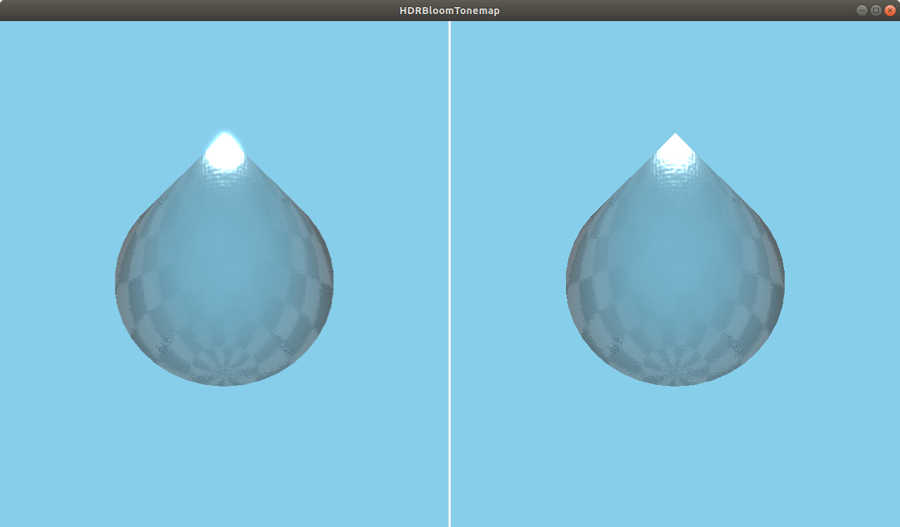

HDRBloomTonemap QML Type
A bloom with tonemapping effect. More...
| Import Statement: | import QtQuick3D.Effects 6.7 |
| Status: | Deprecated since 6.5 |
This type is deprecated since QtQuick3D.Effects 6.5. We strongly advise against using it in new code.
Properties
- bloomThreshold : real
- blurFalloff : real
- channelThreshold : real
- exposure : real
- gamma : real
- tonemappingLerp : real
Detailed Description
Use ExtendedSceneEnvironment instead.
Warning: All pre-made standalone effects in QtQuick3D.Effects are considered deprecated starting with Qt 6.5. To apply glow and bloom to the scene, use ExtendedSceneEnvironment instead.

The HDRBloomTonemap effect provides two features:
- Adjusting the gamma and exposure of the high-dynamic range rendered content to achieve the image quality you want.
- Applying an adjustable bloom effect to bright areas (like the sun glinting off a car).
Property Documentation
bloomThreshold : real |
Sets the threshold for the bloom effect. Any part of the scene brighter than this value will bloom. A value of 1.0 corresponds to white. Lowering this value causes more areas of the rendered scene to bloom. At a value of 0.0 everything in the scene blooms. The range is [0...1]. The default value is 1.
blurFalloff : real |
Adjusts the amount of bloom. Lower values result in a stronger bloom effect, and higher values make the effect more subtle. The range is [0...10]. The default value is 0.
channelThreshold : real |
Specifies the white point for the image. There is usually no need to adjust this. The range is [0...1]. The default value is 1.
exposure : real |
Sets a linear multiplier on the lighting, brightening, or darkening the image overall. A value of 0.0 causes no adjustment to the image. The range is [-9...9]. The default value is 0.
gamma : real |
Affects the non-linear curve of the lighting. Higher values increase the exposure of mid tones, lightening the image and decreasing the contrast. A value of 1.0 causes no adjustment to the image. Sensible values are in the range [0.1...4]. The default value is 1.
tonemappingLerp : real |
Specifies the strength of the overall bloom effect. There is usually no need to adjust this. The range is [0...1], with 0 being no blur and 1 being full bloom. The default value is 1.